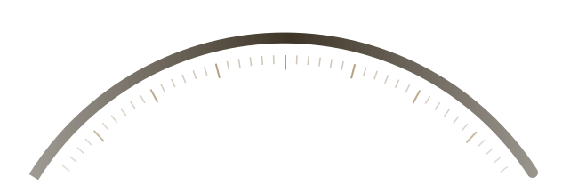
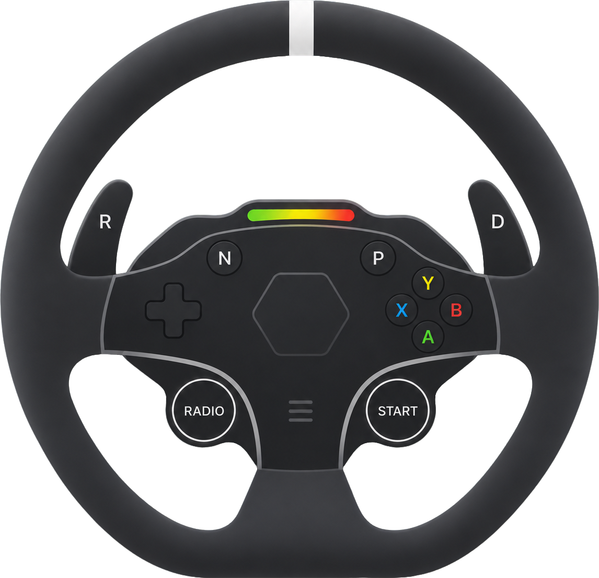
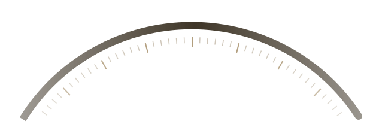
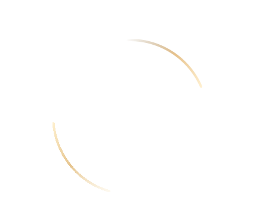

远程代驾 · 座舱开机点检
点检中 4/8座舱E12设备3C:58:C2:9F:1A:07安全员张伟 · XP880232026/10/28 12:04:53
H2
方向盘
请配合完成方向盘转向点检


① 自动转动② 左右打死③ 回正与阻尼
回转角度正中0°最大左 0° / 右 0°
请转动方向盘，开始检测
点检进度
4/ 8
开机点检
点检中 4/8安全员张伟 · XP88023座舱E12
H2
方向盘
① 自动转动② 左右打死③ 回正与阻尼

正中0°
回转角度正中0°最大左 0° / 右 0°
请转动方向盘，开始检测
远程代驾 · 座舱开机点检
点检中 4/8座舱E12设备3C:58:C2:9F:1A:07安全员张伟 · XP880232026/10/28 12:04:53
S1登录状态
正在校验你的登录状态
统一登录
安全员账号登录
工号 / 手机号
密码
登录
检测中...
点检进度1/ 8
远程代驾
安全员工作台 · 座舱开机点检
安全员账号登录
工号 / 手机号
密码
登录
登录成功后自动继续点检
远程代驾 · 座舱开机点检
点检中 2/8座舱E12设备3C:58:C2:9F:1A:07安全员张伟 · XP880232026/11/09 23:17:51
S2软件与双屏
正在检查软件运行和双屏显示
检测中…
点检进度2/ 8
开机点检
点检中 2/8安全员张伟 · XP88023座舱E12
S2软件与双屏
双窗口启动
远程代驾 · 座舱开机点检
点检中 4/8座舱E12设备3C:58:C2:9F:1A:07安全员张伟 · XP880232026/11/09 22:17:55
S3声音外放
听到提示音了吗？
请在操作屏点「可以听到」
点检进度2/ 8
开机点检
点检中 4/8安全员张伟 · XP88023座舱E12
S3声音外放
请问是否听到提示音？
没听到
可以听到
声音由座舱扬声器外放
远程代驾 · 座舱开机点检
点检中 4/8座舱E12设备3C:58:C2:9F:1A:07安全员张伟 · XP880232026/11/09 23:17:51
H1操作套件连接
正在确认操作套件连接

脚踏板
方向盘
检测中...点检进度4/ 8
开机点检
点检中 4/8安全员张伟 · XP88023座舱E12
H1操作套件连接
脚踏板
方向盘
检测中...操作套件连接
建立连接
数据接收正常
远程代驾 · 座舱开机点检
点检中 6/8座舱E12设备3C:58:C2:9F:1A:07安全员张伟 · XP880232026/11/09 23:17:51
H3方向盘按键与拨片
依次按下高亮的按键与拨片
按键1/ 8
P挂P挡
点检进度5/ 8
开机点检
点检中 6/8安全员张伟 · XP88023座舱E12
H3方向盘按键与拨片
按键1/ 8
P挂P挡
远程代驾 · 座舱开机点检
点检中 6/8座舱E12设备3C:58:C2:9F:1A:07安全员张伟 · XP880232026/11/09 23:17:51
H4刹车与电门踏板
把刹车和电门踏板踩到底后松开
点检进度6/ 8
开机点检
点检中 6/8安全员张伟 · XP88023座舱E12
H4刹车与电门踏板
远程代驾 · 座舱开机点检
点检中 7/8座舱E12设备3C:58:C2:9F:1A:07安全员张伟 · XP880232026/11/09 23:17:51
H5触控屏触摸输入
依次点按高亮的触摸区域
点检进度7/ 8
开机点检
点检中 7/8安全员张伟 · XP88023座舱E12
H5触控屏触摸输入
已命中 0/5 区域
远程代驾 · 座舱开机点检
待启动点检座舱E12设备3C:58:C2:9F:1A:07安全员张伟 · XP88023
座舱开机点检
请在操作屏点「开始一键点检」
软件自动检测 · 硬件按提示操作开机点检
待启动点检安全员张伟 · XP88023座舱E12
座舱开机点检
软件自动检查・硬件逐步引导・共 8 项约 1 分钟
登录状态自动
软件与双屏自动
声音外放需操作
操作套件连接自动
方向盘转向需操作
方向盘按键与拨片需操作
刹车与电门踏板需操作
触控屏触摸需操作
远程代驾 · 座舱开机点检
点检完成座舱E12设备3C:58:C2:9F:1A:07安全员张伟 · XP880232026/10/28 12:04:53
点检完成・全部正常
8项通过0项待留意
开机点检
点检未通过安全员张伟 · XP88023座舱E12
点检完成 · 全部正常
8/8 项通过 · 可以进入系统
远程代驾 · 座舱开机点检
点检未通过座舱E12设备3C:58:C2:9F:1A:07安全员张伟 · XP880232026/10/28 12:04:53
点检未通过・1 项需要修复
7项通过 1项待修复
1项待修复
开机点检
点检未通过安全员张伟 · XP88023座舱E12
点检未通过 · 1 项需要修复
修复后点「重新检测问题项」，其余项目已通过
远程代驾 · 座舱开机点检
已完成点检座舱E12安全员张伟 · XP88023
已进入远程代驾系统
开机点检流程已结束
开机点检
已完成点检安全员张伟 · XP88023座舱E12
已进入远程代驾系统
当前为本地交互原型确认态

跳过点检，直接进入系统?
没通过点检的设备可能无法正常工作
本次跳过会被记录并上报后台